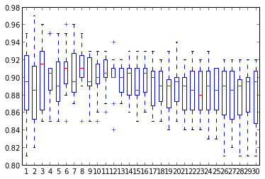

Data Analysis Explained While Kaggling
Table of Contents
Goal
Find the best model for the kaggle competition data-science-london-scikit-learn
Initial data setup :
import numpy as np
data = np.loadtxt('train.csv', delimiter=',')
label = np.loadtxt('trainLabels.csv', delimiter=',')
test = np.loadtxt('test.csv',delimiter=',')
Function to create a kaggle-compliant file :
def kaggle_file(path,coll):
with open(path,"w") as csvfile:
csvfile.write("id,solution\n")
i = 0
for i,v in enumerate(coll):
csvfile.write("%d,%d\n" % (i+1,v))
Cross Validation
To determine the performance of any supervised model, known dataset is split into 2 parts :
- a training part for the model.
- a test part to compute the model's preformance.
More sophisticated validation called Cross validation splits dataset in K equal parts :
- One is used as test set
- Others as training set.
Here the KFold used :
from sklearn import cross_validation cv = cross_validation.KFold(len(data), n_folds=10,shuffle=True, random_state=0)
Simple classifier : kNN
For any reasonable k, the model gives similar and reasonable good performance > 80%.
Which one to choose ? Some Kaggle submissions give k=6 (0.88860) is slightly better than k=3 (0.88785) or k=13 (0.88189).
Below boxplot shows no clear winner

10 KFold scores for kNN models (k=1,…,30)
Afterwards average will be used as unique performance indicator.
SVM optimization
SVM is a natural choice with small dataset.
- Pro : robust
- Cons : computation expensive (quadratic on the size of sample dataset)
Let's optimize C and gamma : Practice shows that gamma should be the first parameter to optimize and then C can be optimize.
Below python code snippet to test each value of the parameter with cross-validation, plot the performance and return the best parameter.
from sklearn import svm
c_values = [1e-1, 1., 1e2, 1e3, 1e4, 1e5, 1e6]
c_values = [1e-2,0.03,0.09, 0.1,0.6,1,2,3,6,10,20]
c_values = np.linspace(1,3,20)
clf = svm.SVC(gamma=0.01)
final_scores = []
for c in c_values:
clf.C = c
scores = cross_validation.cross_val_score(clf, data,label , cv=cv)
final_scores.append(np.average(scores))
plot(c_values,final_scores)
max(zip(final_scores,c_values))
In scikit-learn GridSearchCV find automatically the best parameters of an estimator :
import sklearn from grid_search
C_range = np.linspace(2,20,20)
gamma_range = np.logspace(-3, 0, 5)
param_grid = {'gamma':gamma_range, 'C':C_range}
cv = cross_validation.KFold(len(label), n_folds=10, shuffle=True, random_state=0)
classifier = svm.SVC()
gs = grid_search.GridSearchCV(classifier, param_grid=param_grid, cv=cv)
print gs.best_estimator_
Other models
NeuralNetworks, Boosting and boostrap models give poor result as dataset is rather small.
With dimension reduction
Having 40 features, it's reasonable to reduce them and having a dataset less noisy.
PCA is one of the most used dimension reduction method. From the original features, this method gives a new set of features (called principal components) each one is a linear combinations of the original ones.
Reducing the dimension means to keep enough principal components to explain the data and remove useless information (=the noise). The Principal componenets are orderd by importance (measeured by their variance).
By empirical experiments, 12 is the number of components to keep in order to maximize the performance of the SVM model.
from sklearn import decomposition pca = decomposition.PCA(n_components=12, whiten=True) pca_data = pca.fit_transform(data,label) print pca.explained_variance_
Conclusion
The SVM (C=3 and gamma=0.28) associated with a PCA 12 components gives a score of 0.94635 (and a slight improvement with GridSearchCV : 0.94970).
This work was done @ bigdive2013 with special thanks to André Panisson our teacher.